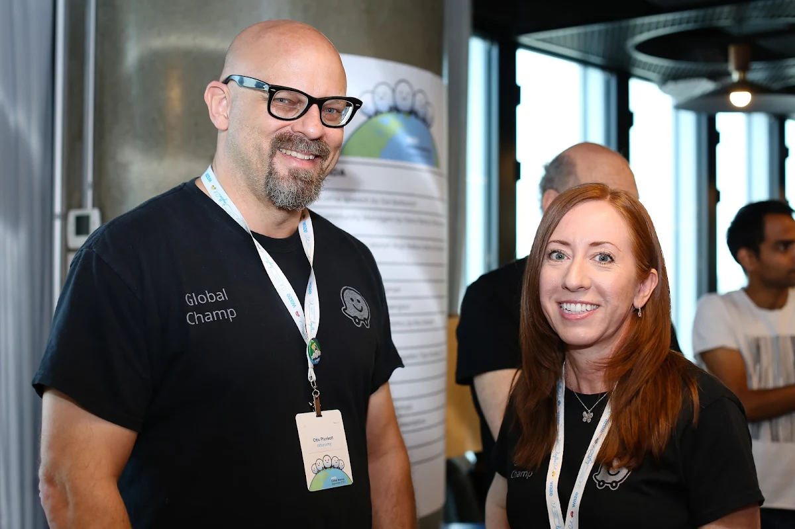

Comunidades do Waze
Ajudando um ao outro a cada curva
A magia do Waze sempre foram as pessoas por trás da tecnologia: quem envia alertas sobre interdições, redesenha vias e encontra formas de tornar o trânsito melhor para todos. Conheça as comunidades do Waze e faça parte delas!

Os editores de mapa têm o poder de melhorar as vias locais, garantindo que o mapa do Waze seja preciso e atualizado.
